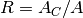

arch – Arch Calculator¶
From the introduction:
ARCH CALCULATOR by George Murphy VE3ERP
*H
A* *C *B
*X
This program calculates the following elements of an arch:
Curved arch AHB
Chord AB
Segment height CH
Radii XA, XH, XB
Angle AXB
All dimensions in ANY identical units of measure:
Sample Output:
Curved arch AHB.... 10.265 units
Chord AB........... 10.000 units
Segment Height CH.. 1.000 units
Radii XA, XH, XB... 13.000 units
Angle AXB.......... 45.240°
Analysis¶
This is a proper Solver for various features of an arch.
Input parameters are the following.
| R: | Radii XA, XH, XB,  . . |
|---|---|
| A: | Angle AXB. |
| C: | Chord AB. |
| AC: | Curved arch AHB. |
| B: | Segment height CH. |
Extra variables, CF (Circumference) and AR (Area) are also computed.
The Calculations:
440 IF B=0 AND A=P THEN B=0:GOSUB 640
450 IF AR=0 AND R<>0 THEN AR=P*R^2:D=2*R:CF=P*D
460 IF D=0 AND R<>0 THEN D=2*R
470 IF CF=0 AND R<>0 THEN CF=P*2*R
480 IF AC=0 AND A*R<>0 THEN AC=A*R
490 IF A=0 AND AC*R<>0 THEN A=AC/R
500 IF A=0 AND R*C<>0 THEN Z=C/2/R:A=2*ATN(Z/SQR(-Z*Z+1))
510 IF R=0 AND A*B<>0 THEN R=B/(1-COS(A/2))
520 IF R=0 AND B*C<>0 THEN R=(4*B^2+C^2)/(8*B):A=2*(P-(2*(ATN((C/2)/B))))
530 IF C=0 AND B*R<>0 THEN C=2*(SQR(2*B*R-B^2))
540 IF C=0 AND A*R<>0 THEN C=2*R*SIN(A/2)
550 IF B=0 AND R*C<>0 THEN B=R-0.5!*(SQR(4*R^2-C^2))
560 IF B=0 AND A*C<>0 THEN B=C/2*TAN(A/4)
570 IF B=0 AND A*R<>0 THEN B=2*R*(SIN(A/4)^2)
580 IF R=0 AND AR<>0 THEN R=SQR(AR/P)
590 IF R=0 AND CF<>0 THEN R=CF/(2*P)
600 IF R=0 AND A*AC<>0 THEN R=AC/A
610 IF A=0 AND AC*B<>0 THEN GOSUB 640
620 IF A=0 AND AC*C<>0 THEN GOSUB 700
440. If and B is unknown:  ; approximate A via 640. This seems needless.
; approximate A via 640. This seems needless.
450. Given R:
460. Given R: 
470. Given R:
480. Given A and R:
490. Given AC and R:
500. Given R and C: 
Legacy uses a trig identity.
510. Given A and B:
520. Given B and C:

530. Given B and R: 
540. Given A and R: 
550. Given R and C:
560. Given A and C:
570. Given A and R:
580. Given AR:
590. Given CF:
600. Given A and AC: 
610. Given AC and B: approximate A via 640.
620. Given AC and C, approximate A via 700. This doesn’t look completely sensible.
Line 640 says this.
640 :REM'.....solve angle A by iteration if AC (arc) and B (height) known
Solve A from AHB (AC) and the segment height CH (B). In propcirc – Circle, Properties of, these are called AC and B, also. The hamcalc.math.propcirc module has hamcalc.math.propcirc.arc_height_2_r() which does precisely this.
Line 700 says this:
700 :REM'.....solve angle A by iteration if AC (arc) and C (chord) known
Is an approximation even possible? Two points do not define a circle, this may not actually be sensible.
Implementation¶
Note that some optimization may be possible. Specifically, it may be possible to follow the two-phase strategy shown in propcirc – Circle, Properties of. First, compute the essential parameters from the inputs; second, comute all remaining derived values from the essential values.
hamcalc.construction.arch
A Solver which calculates various properties of an arch.
Test Cases
>>> import hamcalc.construction.arch as arch
>>> a= arch.arch( C=10, B=1 )
>>> round( a.A_C, 3 )
10.265
>>> round( a.R, 3 )
13.0
>>> round( a.A_d, 3 )
45.24
>>> round( a.C_F, 3 )
81.681
Legacy Quirks¶
The “solver” algorithm in lines 410-630 iterates 21 times. There are only five unknowns.
Being sure that B really is zero and A is really pi?
440 IF B=0 AND A=P THEN B=0:GOSUB 640